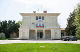

Institutul National de Gerontologie si Geriatrie "Ana Aslan"
Informații generale
Despre noi

Institutul Ana Aslan
Fondat in 1952, Institutul National de Gerontologie si Geriatrie Ana Aslan este primul institut din lume dedicat crearii premiselor unei longevitati active prin protejarea, mentinerea si imbunatatirea sanatatii pacientilor varstnici. Avand in centrul serviciilor medicale oferite metoda de tratament Ana Aslan (marca inregistrata a Institutului), INGG trateaza pacienti din toate colturile lumii folosind tehnologii de ultima generatie, integrate intr-un sistem holistic de abordare si tratament. Astfel, asistenta medicala este bazata pe cercetarea stiintifica a colectivului propriu, pe elemente de gerontologie sociala dar si pe echipamentele performante din dotare. Institutul National de Gerontologie si Geriatrie“Ana Aslan” are in centrul preocuparilor sale studiul procesului de imbatranire a organismului uman din punct de vedere biologic, clinic, terapeutic, psihologic si social.
Cine a fost Ana Aslan
Să fii veșnic tânăr nu înseamnă să ai 20 de ani, înseamnă să fii optimist, să te simți bine, să ai un ideal în viață pentru care să lupți și pe care să îl cucerești - Ana Aslan
Ana Aslan (n. 1 ianuarie 1897, la Brăila – d. 20 mai 1988, la București) a fost medic român specialist în gerontologie, academician din 1974, director al Institutului Național de Geriatrie și Gerontologie (1958 – 1988). A evidențiat importanța procainei în ameliorarea tulburărilor distrofice legate de vârstă, aplicând-o pe scară largă în clinica de geriatrie, sub numele de Gerovital. Numeroase personalități internaționale au urmat tratament cu Gerovital: Tito, Charles de Gaulle, Hrusciov, J.F. Kennedy, Indira Gandhi, Imelda Marcos, Marlene Dietrich, Konrad Adenauer, Charlie Chaplin, Kirk Douglas, Salvador Dali. Ana Aslan a inventat (în colaborare cu farmacista Elena Polovrăgeanu) produsul geriatric Aslavital, brevetat și introdus în producție industrială în 1980. Ana Aslan s-a născut la 1 ianuarie 1897, la Brăila, fiind cel mai mic dintre cei patru copii ai Sofiei și ai lui Mărgărit Aslan, o familie de intelectuali. Urmează cursurile colegiului Romașcanu din Brăila. La 13 ani își pierde tatăl. Familia Aslan părăsește orașul natal și se mută la București. În 1915, Ana absolvă Școala Centrală din București. La 16 ani, visează să ajungă pilot și chiar zboară cu un mic aparat, tip Bristol – Coandă. În cele din urmă se decide să devină medic. Declară greva foamei pentru a înfrânge împotrivirea mamei și se înscrie la Facultatea de Medicină.
În timpul Primului Război Mondial, îngrijește soldații în spitalele militare din spatele frontului de la Iași. După întoarcerea la București, în anul 1919, lucrează alături de marele neurolog Gheorghe Marinescu. Trei ani mai târziu, absolvă Facultatea de Medicină. Este numită preparator la clinica II din București, condusă de profesorul Daniel Danielopolu, care o îndrumă și în alcătuirea tezei de doctorat.
Urmează o activitate didactică și spitalicească la Filantropia, Institutul Clinico-Medical al Facultăţii de Medicină din București, Clinica Medicală din Timișoara, Spitalul CFR. Din 1949, devine șeful Secţiei de fiziologie a Institutului de Endocrinologie din București. Este punctul de plecare al carierei ei de gerontolog. Experimentează procaina în afecțiunile reumatice, în cazul unui student țintuit la pat din cauza unei crize de artroză. Continuă cercetările într-un azil de bătrâni și evidențiază importanța procainei în ameliorarea tulburărilor distrofice legate de vârstă. Obține rezultate remarcabile, care sunt comunicate Academiei Române.
Dacă doriți să aflați mai multe detalii, dați click aici pentru a citi un articol semnat de Adevărul despre personalitatea puternică a Anei Aslan sau să urmăriți videoclipul de mai jos.
Ce facem?
In INGG ii evaluam pacientului procesul de imbatranire functionala pentru a preveni bolile cronice asociate, si pentru a creste sansele unei longevitati active. Obiectivul principal este construirea de capacități fizice și cognitive astfel încât potențialul maxim al adultului să fie atins. Totodata vizam mentinerea functiei de organ si intarzierea debutului si a ritmului declinului functional si a bolii.
Medicina geriatrica depaseste medicina orientata spre organ sau sistem, obiectivul echipei multidisciplinare fiind optimizarea statusului functional al persoanei in varsta, ameliorarea durerii si cresterea calitatii vietii pentru imbunatatirea autonomiei pacientului.
Dați click aici pentru a afla mai multe detalii legate de planul de managment al institutiei.
Întrebări frecvente
Ce fel de proceduri sunt oferite în clinica dumneavoastră?
Consultație de geriatrie
Electroterapie
Fotoliul Emsella
Kinetoterapie
Diatermia de contact
Terapia cu lumina polarizata
Hidroterapia cu bai galvanice
Terapia prin drenaj limfatic
Hidroterapia - căzile de hidromasaj
Cine sunt partenerii noștri?
Asociația Română de Psihologie Clinică
Societatea Română de Gerontologie și Geriatrie
Care sunt obligațiile pacientului?
Sa respecte regulile ce se aplica in spital (comunicate de personalul medical)
Sa pastreze ordinea, linistea si curatenia in spital
Sa respecte programul de vizite si de masa precum si circuitele functionale din spital
Sa nu deterioreze bunurile din spital
Sa respecte indicatiile terapeutice ale medicului pe perioada internarii
Sa nu utilizeze consumatori electrici decat cu aprobarea medicilor sefi de sectie
Sa nu paraseasca spitalul fara aprobare pentru probleme extramedicale; in cazul in care are drept de invoire sa nu depaseasca timpul care i-a fost acordat
Sa pastreze si sa predea in bune conditii echipamentul de spital si lenjeria de pat primite pentru sederea iîn spital;
Se interzice complet fumatul in unitatea sanitara, avand in vedere prevederile Legii nr. 349/2002 art.3.